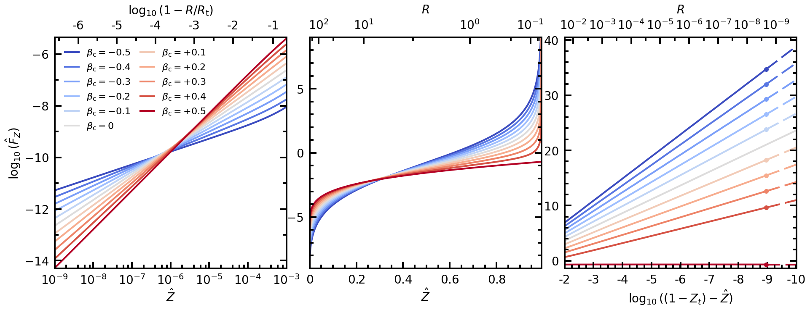
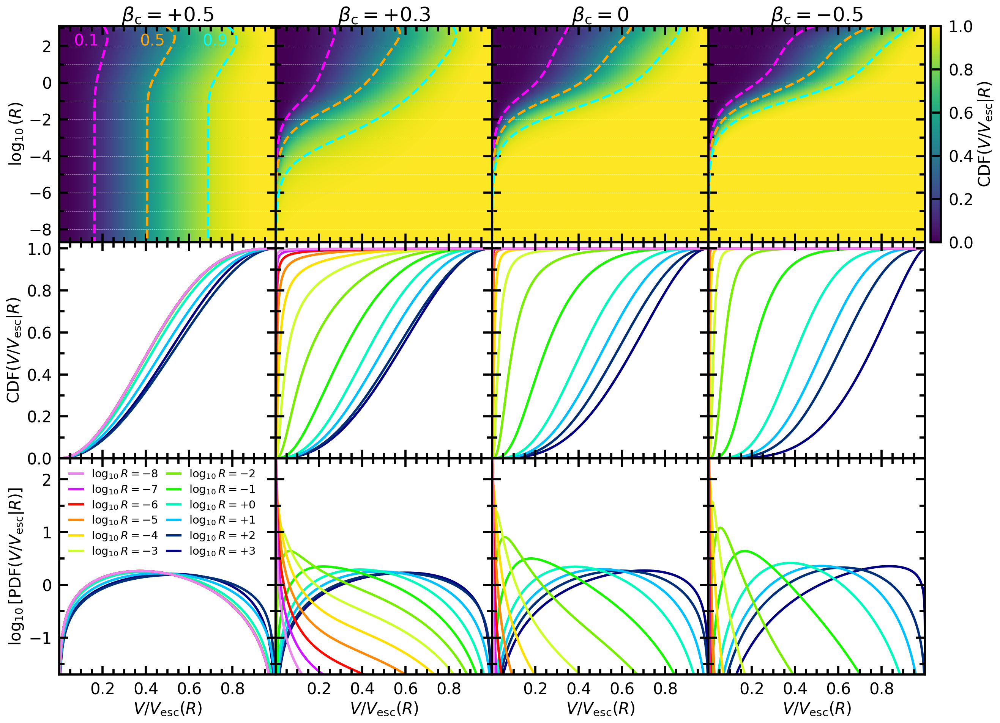

Figs. C1 and C2: Distribution function and velocity distribution accuracy checks#
This notebook makes Figures C1 and C2 of the paper.
Both appendix figures are drawn on the same NFW halo truncated at \(\mathcal{Z}_{\rm t} = k_{\rm t} = 0.00796\) (Method I, isotropic) and constant-anisotropy Method II models on its density. The models are solved once, below: Fig. C1 draws all eleven, and Fig. C2 draws four of them (\(\beta_{\rm c} = +0.5, +0.3, 0, -0.5\)).
Internal units throughout (the scale radius is 1). Everything here is computed by the package’s public calls; nothing is read from stored data.
Per-call accuracy messages are quieted; the summary after each figure’s models lists every model’s tier.
import os
# XLA logs a line each time it loads a compiled function from the cache; level 3 keeps those lines out of the output.
# It takes effect only when set before JAX is imported, which the import of pianistpy does.
os.environ["TF_CPP_MIN_LOG_LEVEL"] = "3"
import logging
import math
import warnings
import pianistpy as pp
# The figures of the paper are made with ver. 1.0.0 of the package; any other installed version stops the notebook here.
PIANISTPY_PIN = "1.0.0"
print(f"pianistpy {pp.__version__}")
if pp.__version__ != PIANISTPY_PIN:
raise RuntimeError(
f"These figures are made with pianistpy {PIANISTPY_PIN}; the installed version is {pp.__version__}."
)
# The package reports each result's accuracy twice per call: a line of the pianistpy log and Python's AccuracyWarning.
# set_verbosity("quiet") hides the log's INFO line of a result in the band "recorded"; the pianistpy logger set to
# ERROR also hides the log's WARNING line of a result in the band "warned"; the filter hides the AccuracyWarning.
# The summary after each figure's models prints every model's tier in place of those per-call messages.
pp.set_verbosity("quiet")
logging.getLogger("pianistpy").setLevel(logging.ERROR)
warnings.filterwarnings("ignore", category=pp.AccuracyWarning)
def tier_line(label, result):
"""One summary line for a result: its label, its report's tier, and the report's worst check with that check's error.
The worst check is the check of the highest tier level; among checks of one level, the check with the largest error.
A result whose tier is carried from the Method I model's report, and not from any of the result's own checks, says so.
"""
if result is None:
return f"{label:34s} not built: the package's exception is printed above"
report = result.validation
def rank(key):
error = report.checks[key].error
return (report.checks[key].level, error if not math.isnan(error) else -math.inf)
worst = max(report.keys, key=rank)
own_level = report.checks[worst].level
origin = ", the tier carried from the Method I model's report" if report.parents_level > own_level else ""
return (f"{label:34s} tier {report.tier:9s} worst check {worst} "
f"{report.checks[worst].error:.2e}{origin}")
pianistpy 1.0.0
import numpy as np
import pianistpy as pp
Z_T = 0.0079589980165958 # the truncation energy k_t of the figure's NFW halo
BETAS = (-0.5, -0.4, -0.3, -0.2, -0.1, 0.0, 0.1, 0.2, 0.3, 0.4, 0.5)
truncated = pp.solve(
pp.Component(pp.DoublePowerLaw.nfw(), pp.Anisotropy()), pp.Truncation(k_t=Z_T)
)
models = {
b: truncated if b == 0.0 else pp.solve(pp.Component(truncated.profile, pp.Anisotropy(beta_c=b)))
for b in BETAS
}
print("Figure C1: the eleven models")
for b, model in models.items():
print(tier_line(f"beta_c = {b:+.1f}" + (", Method I" if b == 0.0 else ""), model))
Figure C1: the eleven models
beta_c = -0.5 tier silent worst check round_trip 6.11e-08
beta_c = -0.4 tier silent worst check round_trip 6.11e-08
beta_c = -0.3 tier silent worst check round_trip 6.11e-08
beta_c = -0.2 tier silent worst check round_trip 6.11e-08
beta_c = -0.1 tier silent worst check round_trip 7.06e-08
beta_c = +0.0, Method I tier silent worst check round_trip 6.11e-08
beta_c = +0.1 tier silent worst check top_form 7.51e-08
beta_c = +0.2 tier silent worst check round_trip 9.41e-08
beta_c = +0.3 tier silent worst check round_trip 1.27e-07
beta_c = +0.4 tier silent worst check round_trip 1.69e-07
beta_c = +0.5 tier silent worst check round_trip 2.22e-07
Figure C1: the distribution functions of eleven constant anisotropies on one density#
\(\log_{10}\hat{F}\) against \(\hat{\mathcal{Z}}\) for the NFW halo truncated at \(\mathcal{Z}_{\rm t} = k_{\rm t} = 0.00796\) (Method I, isotropic, \(\beta_{\rm c} = 0\)) and ten Method II models on its density, \(\beta_{\rm c} = -0.5\) to \(+0.5\).
The solid curves are each model’s DF table (Model.table). Where a Method II table ends below the center, a filled circle marks the table’s last row and the dashed curve beyond it is the DF’s form at the center (pianistpy.df.lookup.log10_df past the table’s last row), drawn to \(P_0 - \hat{\mathcal{Z}} = 10^{-10}\), the right panel’s edge. The Method I table (\(\beta_{\rm c} = 0\)) reaches the right panel’s edge on its own rows and has no anchor: it is drawn solid, without a circle.
Internal units throughout (the scale radius is 1). Everything here is computed by the package’s public calls; nothing is read from stored data.
Each model’s DF as the figure reads it (its energies, \(\log_{10}\) of the DF there, and \(P_0\)): the table’s rows and, past a Method II table’s anchor, the form at the center out to \(P_0 - \hat{\mathcal{Z}} = 10^{-10}\); each model’s anchor; and the Method I model’s profile (radius and potential).
from pianistpy.df.lookup import log10_df
N_FORM = 113 # energies past each anchor (the arXiv figure's input files carried 113 there)
df_tables = {} # beta_c: (energies, log10 of the DF, P0)
anchors = {} # beta_c: (the low-energy form's energy, 0 for none; the anchor energy, NaN for none)
for b, m in models.items():
k = np.asarray(m.table.k[0], dtype=np.float64)
log_df = np.asarray(m.table.log_df[0], dtype=np.float64)
p_0 = float(m.form.p_0)
k_anchor = float("nan") if m is truncated else float(k[-1]) # a Method II table's top; Method I: no anchor
if np.isfinite(k_anchor):
k_form = p_0 - np.geomspace(p_0 - k_anchor, 1e-10, N_FORM + 1)[1:]
k = np.concatenate([k, k_form])
log_df = np.concatenate([log_df, np.asarray(log10_df(m.table, m.form, k_form), dtype=np.float64)])
df_tables[b] = (k, log_df, p_0)
anchors[b] = (0.0, k_anchor)
print(f"beta_c = {b:+.1f}: {m.table.k.shape[1]} table rows to P0 - K = {p_0 - float(m.table.k[0][-1]):.4e}; anchor "
+ (f"at P0 - K = {p_0 - k_anchor:.4e}, then {N_FORM} energies of the form to 1e-10, log10 F there "
f"{log_df[-N_FORM]:.4f} to {log_df[-1]:.4f}" if np.isfinite(k_anchor) else "none"))
profile_r = np.asarray(truncated.profile.r)
profile_psi = np.asarray(truncated.profile.p_trunc)
print(f"the Method I model's profile: {profile_r.size} rows, R from {profile_r.min():.6e} to {profile_r.max():.6f}, "
f"potential from {profile_psi.min():.6e} to {profile_psi.max():.12f}")
beta_c = -0.5: 9763 table rows to P0 - K = 1.1000e-09; anchor at P0 - K = 1.1000e-09, then 113 energies of the form to 1e-10, log10 F there 34.7521 to 38.8808
beta_c = -0.4: 9763 table rows to P0 - K = 1.1000e-09; anchor at P0 - K = 1.1000e-09, then 113 energies of the form to 1e-10, log10 F there 32.0244 to 35.8435
beta_c = -0.3: 9763 table rows to P0 - K = 1.1000e-09; anchor at P0 - K = 1.1000e-09, then 113 energies of the form to 1e-10, log10 F there 29.2916 to 32.8010
beta_c = -0.2: 9763 table rows to P0 - K = 1.1000e-09; anchor at P0 - K = 1.1000e-09, then 113 energies of the form to 1e-10, log10 F there 26.5523 to 29.7521
beta_c = -0.1: 9763 table rows to P0 - K = 1.1000e-09; anchor at P0 - K = 1.1000e-09, then 113 energies of the form to 1e-10, log10 F there 23.8044 to 26.6945
beta_c = +0.0: 12092 table rows to P0 - K = 1.0250e-10; anchor none
beta_c = +0.1: 9763 table rows to P0 - K = 1.1000e-09; anchor at P0 - K = 1.1000e-09, then 113 energies of the form to 1e-10, log10 F there 18.2685 to 20.5392
beta_c = +0.2: 9763 table rows to P0 - K = 1.1000e-09; anchor at P0 - K = 1.1000e-09, then 113 energies of the form to 1e-10, log10 F there 15.4653 to 17.4264
beta_c = +0.3: 9763 table rows to P0 - K = 1.1000e-09; anchor at P0 - K = 1.1000e-09, then 113 energies of the form to 1e-10, log10 F there 12.6130 to 14.2644
beta_c = +0.4: 9763 table rows to P0 - K = 1.1000e-09; anchor at P0 - K = 1.1000e-09, then 113 energies of the form to 1e-10, log10 F there 9.6393 to 10.9811
beta_c = +0.5: 9763 table rows to P0 - K = 1.1000e-09; anchor at P0 - K = 1.1000e-09, then 113 energies of the form to 1e-10, log10 F there -0.6933 to -0.6933
the Method I model's profile: 77319 rows, R from 2.000000e-10 to 1213.635364, potential from 0.000000e+00 to 0.992041001883
The figure.
# The script that drew the published Fig. C1, changed only where it reads its data: the energies, DFs and P0 of each model,
# the anchors and the Method I model's profile come from the cells above instead of the arXiv figure's text files.
#!/usr/bin/env python3
"""
The script of Fig. C1.
"""
import numpy as np
import math
import warnings
import matplotlib
import matplotlib.pyplot as plt
from matplotlib.ticker import (MultipleLocator, NullFormatter,
LogLocator, FuncFormatter, FixedLocator,
FixedFormatter)
# ------------------------------------------------------------------------------
# -- Global style parameters ---------------------------------------------------
# ------------------------------------------------------------------------------
FONTSIZE_COL_TITLE = 25
FONTSIZE_AXIS_LABEL = 20
FONTSIZE_TICK = 20
FONTSIZE_LEGEND = 16 # as published (the arXiv run's LEGEND_FONTSIZE=16)
FONTSIZE_CBAR_LABEL = 20
FONTSIZE_CONTOUR_LBL = 20
LW_CURVE = 3.0
LW_SLICE_CURVE = 3.0
LW_HEATMAP_HLINE = 0.5
LW_CONTOUR = 3.0
SPINE_LW = 2.5
TICK_WIDTH = 2.5
TICK_LENGTH_MAJOR = 8.5
TICK_LENGTH_MINOR = 5.5
# ------------------------------------------------------------------------------
# -- USER INPUT: patch marker size ---------------------------------------------
# ------------------------------------------------------------------------------
PATCH_MARKER_SIZE = 7 # size of filled circle markers at patch thresholds
# (on_pts, off_pts) in points: controls dash length and gap uniformly
DASH_PATTERN = (8.0, 3.0)
# ------------------------------------------------------------------------------
# -- Patch anchor values (low-Q and high-Q) for each beta_c case --------------
# -- Extracted directly from run logs. --
# -- low_Q_anchor : Q value below which low-Q power-law patch is applied --
# -- high_Q_anchor : Q value above which high-Q analytical patch is applied --
# -- nan = no high-Q patch applied for that case --
# ------------------------------------------------------------------------------
PATCH_ANCHORS = {
# beta_c : (low_Q_anchor, high_Q_anchor)
-0.5 : (3.612e-7, 0.991045),
-0.4 : (3.612e-7, 0.991045),
-0.3 : (3.612e-7, 0.991045),
-0.2 : (3.612e-7, 0.991045),
-0.1 : (3.612e-7, 0.991045),
0.0 : (3.612e-7, 0.9917247742173874), # Method I post-trunc anchor
0.1 : (3.612e-7, 0.991045),
0.2 : (3.612e-7, 0.991045),
0.3 : (3.612e-7, 0.991045),
0.4 : (3.612e-7, 0.991045),
0.5 : (3.612e-7, float('nan')), # plateau case; no high-Q patch
}
# ------------------------------------------------------------------------------
# -- Truncation parameter ------------------------------------------------------
# ------------------------------------------------------------------------------
Zt = 0.0079589980165958
EPS_MAX_PHYSICAL = 1.0 - Zt
# ------------------------------------------------------------------------------
# -- Axis label strings --------------------------------------------------------
# ------------------------------------------------------------------------------
X_LABEL_EPS = r"$\hat{Z}$"
X_LABEL_DELTA = r"$\hat{Z}$"
Y_LABEL = r"$\log_{10}(\hat{F}_{Z})$"
TOP_LABEL = r"$R$"
# ------------------------------------------------------------------------------
# -- Right panel explicit tick values ------------------------------------------
# ------------------------------------------------------------------------------
RIGHT_K_TICKS = np.array([
EPS_MAX_PHYSICAL * (1.0 - 1e-2),
EPS_MAX_PHYSICAL * (1.0 - 1e-3),
EPS_MAX_PHYSICAL * (1.0 - 1e-4),
EPS_MAX_PHYSICAL * (1.0 - 1e-5),
EPS_MAX_PHYSICAL * (1.0 - 1e-6),
EPS_MAX_PHYSICAL * (1.0 - 1e-7),
EPS_MAX_PHYSICAL * (1.0 - 1e-8),
EPS_MAX_PHYSICAL * (1.0 - 1e-9),
EPS_MAX_PHYSICAL * (1.0 - 1e-10), # to the table's top
])
RIGHT_LD_TICKS = np.log10(EPS_MAX_PHYSICAL - RIGHT_K_TICKS)
# ------------------------------------------------------------------------------
# -- Panel configurations ------------------------------------------------------
# ------------------------------------------------------------------------------
PANEL_CONFIGS = [
dict(
xscale = "log",
eps_lo = 1e-9,
eps_hi = 1e-3,
ymin = -14.3,
ymax = -5.35,
right_panel = False,
),
dict(
xscale = "linear",
eps_lo = None,
eps_hi = None,
ymin = -9.0,
ymax = 9.0,
right_panel = False,
),
dict(
xscale = "linear",
eps_lo = EPS_MAX_PHYSICAL * (1.0 - 1e-2),
eps_hi = EPS_MAX_PHYSICAL * (1.0 - 1e-10), # to the table's top (P0 - K_top = 1.0e-10)
ymin = -1.4,
ymax = 40.5,
right_panel = True,
),
]
# ------------------------------------------------------------------------------
# -- Input files ---------------------------------------------------------------
# ------------------------------------------------------------------------------
NFW_PROFILE_FILE = "NFW_Profiles_MethodI_Isotropic.txt"
DF_FILES = {
-0.5 : "DF_MethodII_Const_betam0p5.txt",
-0.4 : "DF_MethodII_Const_betam0p4.txt",
-0.3 : "DF_MethodII_Const_betam0p3.txt",
-0.2 : "DF_MethodII_Const_betam0p2.txt",
-0.1 : "DF_MethodII_Const_betam0p1.txt",
0.0 : "DF_MethodI_Isotropic.txt",
0.1 : "DF_MethodII_Const_beta0p1.txt",
0.2 : "DF_MethodII_Const_beta0p2.txt",
0.3 : "DF_MethodII_Const_beta0p3.txt",
0.4 : "DF_MethodII_Const_beta0p4.txt",
0.5 : "DF_MethodII_Const_beta0p5.txt",
}
BETA_VALUES = list(DF_FILES.keys())
# each model's own thresholds: no low-energy form (0), and the anchor above which the DF is its form at the center
PATCH_ANCHORS = anchors
OUTPUT_FIG = "Visualize_DF_Anisotropy.pdf"
# ------------------------------------------------------------------------------
# -- Color map ----------------------------------------------------------------
# ------------------------------------------------------------------------------
cmap = matplotlib.colormaps["coolwarm"]
colors = {beta: cmap(i / (len(BETA_VALUES) - 1))
for i, beta in enumerate(BETA_VALUES)}
# ------------------------------------------------------------------------------
# -- Load NFW profile ----------------------------------------------------------
# ------------------------------------------------------------------------------
print(f"The Method I model's profile: {profile_r.size} rows")
nfw_R = profile_r
nfw_Phi = profile_psi
sort_idx_R = np.argsort(nfw_R)
R_sorted = nfw_R[sort_idx_R]
Phi_sorted = nfw_Phi[sort_idx_R]
logR_sorted = np.log10(R_sorted)
def epsilon_to_logR(eps):
return np.interp(np.asarray(eps, dtype=float),
Phi_sorted[::-1], logR_sorted[::-1])
def logR_to_epsilon(logR):
return np.interp(np.asarray(logR, dtype=float),
logR_sorted, Phi_sorted)
# THE RADIUS MAP CONTINUED BELOW THE PROFILE TABLE'S FIRST ROW by the cusp's own law, P0 - Psi = a R (a from the
# first row; the first two rows give the same a to 2e-6): the right panel reaches P0 - Z = 1e-10, below the first row
# (P0 - Psi = 5e-10), where a clipped map is flat and the top axis was stretched over the whole panel
_a_cusp = (EPS_MAX_PHYSICAL - Phi_sorted[0]) / R_sorted[0]
_R_ext = R_sorted[0] * 10.0 ** np.arange(-3.0, 0.0, 0.25)
R_sorted = np.concatenate([_R_ext, R_sorted]); Phi_sorted = np.concatenate([EPS_MAX_PHYSICAL - _a_cusp * _R_ext, Phi_sorted])
logR_sorted = np.log10(R_sorted)
eps_min = float(Phi_sorted.min())
eps_max = float(Phi_sorted.max())
logR_min = float(logR_sorted.min())
logR_max = float(logR_sorted.max())
print(f" Epsilon range : [{eps_min:.6e}, {eps_max:.6f}]")
print(f" log10(R) range: [{logR_min:.3f}, {logR_max:.3f}]")
print(f" 1 - Zt = {EPS_MAX_PHYSICAL:.7f}")
print("")
print(" R -> Z (hat) diagnostic (interpolated from NFW profile):")
print(f" {'R':>12s} {'log10(R)':>10s} {'Z_hat = Phi(R)':>18s} {'1 - Z_hat':>18s}")
print(" " + "-" * 72)
for exp in range(-9, 4):
R_val = 10.0 ** exp
logR_v = float(exp)
if logR_v < logR_min or logR_v > logR_max:
print(f" {R_val:>12.3e} {logR_v:>10.1f} {'(out of range)':>18s}")
continue
z_val = logR_to_epsilon(logR_v)
one_m_z = 1.0 - z_val
print(f" {R_val:>12.3e} {logR_v:>10.1f} "
f"{z_val:>18.10e} {one_m_z:>18.10e}")
print("")
# ------------------------------------------------------------------------------
# -- Left panel top-axis lookup table: Phi <-> log10((Rt-R)/Rt) ---------------
# -- Built from raw NFW profile rows with Phi < 1e-3.9, skip last (R=Rt) ------
# ------------------------------------------------------------------------------
Rt = R_sorted[-1]
_phi_cut = 10.0 ** (-2.5) # the edge map over the whole left panel (Z_hat to 1e-3: u to -0.70); was 10^-3.9 (u to -1.52)
_mask_lp = (Phi_sorted < _phi_cut)
_mask_lp[-1] = False
lp_Phi = Phi_sorted[_mask_lp]
lp_R = R_sorted[_mask_lp]
lp_RtmR = Rt - lp_R
lp_u = np.log10(lp_RtmR / Rt)
lp_u_inc = lp_u[::-1]
lp_Phi_inc = lp_Phi[::-1]
print(" Left-panel top-axis table (first/last 3 rows):")
print(f" {'Phi':>18s} {'R':>12s} {'Rt-R':>12s} {'u=log10((Rt-R)/Rt)':>22s}")
print(" " + "-" * 75)
for i in list(range(3)) + list(range(-3, 0)):
print(f" {lp_Phi[i]:>18.10e} {lp_R[i]:>12.6f} "
f"{lp_RtmR[i]:>12.6f} {lp_u[i]:>22.10f}")
print(f" u range: [{lp_u.min():.4f}, {lp_u.max():.4f}]")
print("")
def phi_to_u(phi):
return np.interp(np.asarray(phi, dtype=float), # np.interp on the increasing Phi table
lp_Phi[::-1], lp_u[::-1])
def u_to_phi(u):
return np.interp(np.asarray(u, dtype=float),
lp_u_inc, lp_Phi_inc,
left=lp_Phi_inc[-1], right=lp_Phi_inc[0])
# ------------------------------------------------------------------------------
# -- Load all DF files ---------------------------------------------------------
# ------------------------------------------------------------------------------
df_data = {}
for beta, fname in DF_FILES.items():
epsilon, log_df_model, p0_file = df_tables[beta]
print(f" beta_c = {beta:+.1f}: {epsilon.size} energies, P0 = {p0_file:.16e}")
df_vals = 10.0 ** log_df_model
with np.errstate(divide="ignore", invalid="ignore"):
log_df = np.where(df_vals > 0, np.log10(df_vals), np.nan)
delta = p0_file - epsilon
log_delta = np.where(delta > 0,
np.log10(np.where(delta > 0, delta, 1.0)),
np.nan)
df_data[beta] = dict(epsilon=epsilon, log_df=log_df,
log_delta=log_delta, p0=p0_file)
# ------------------------------------------------------------------------------
# -- Top-axis R-tick helper ----------------------------------------------------
# ------------------------------------------------------------------------------
def get_R_decade_ticks(logR_lo, logR_hi):
exp_lo = int(np.floor(logR_lo + 1e-9))
exp_hi = int(np.floor(logR_hi + 1e-9))
positions, labels = [], []
for n in range(exp_lo, exp_hi + 1):
if logR_lo - 1e-3 <= n <= logR_hi + 1e-3: # the table's first row is 1.00028e-9: label 10^-9 there
positions.append(float(n))
labels.append(r"$10^{{{}}}$".format(n))
return np.array(positions), labels
# ------------------------------------------------------------------------------
# -- Figure layout -------------------------------------------------------------
# ------------------------------------------------------------------------------
PANEL_SIZE = 5.5
H_GAP = 0.55
LEFT_MARGIN = 0.85
RIGHT_MARGIN = 0.25
TOP_MARGIN = 0.85
BOT_MARGIN = 0.90
fig_w = LEFT_MARGIN + 3 * PANEL_SIZE + 2 * H_GAP + RIGHT_MARGIN
fig_h = BOT_MARGIN + PANEL_SIZE + TOP_MARGIN
fig = plt.figure(figsize=(fig_w, fig_h))
axes = []
for col in range(3):
x0 = (LEFT_MARGIN + col * (PANEL_SIZE + H_GAP)) / fig_w
y0 = BOT_MARGIN / fig_h
w = PANEL_SIZE / fig_w
h = PANEL_SIZE / fig_h
ax = fig.add_axes([x0, y0, w, h])
ax.set_box_aspect(1)
axes.append(ax)
# ------------------------------------------------------------------------------
# -- Spine / tick style helper -------------------------------------------------
# ------------------------------------------------------------------------------
def style_ax(ax, label_left=True, label_bottom=True, label_top=False):
ax.set_axisbelow(False)
for spine in ax.spines.values():
spine.set_linewidth(SPINE_LW)
ax.tick_params(
which="major", direction="in",
width=TICK_WIDTH, length=TICK_LENGTH_MAJOR,
labelsize=FONTSIZE_TICK,
top=True, bottom=True, left=True, right=True,
labeltop=label_top, labelbottom=label_bottom,
labelleft=label_left, labelright=False,
zorder=10
)
ax.tick_params(
which="minor", direction="in",
width=TICK_WIDTH * 0.6, length=TICK_LENGTH_MINOR,
top=True, bottom=True, left=True, right=True,
zorder=10
)
# ------------------------------------------------------------------------------
# -- Helper: split a curve at a threshold and plot solid / dashed -------------
# -- For low-Q: solid above threshold_x, dashed below --
# -- For high-Q: solid below threshold_x, dashed above --
# -- Returns the (x, log_df) coordinate of the marker point. --
# ------------------------------------------------------------------------------
def _plot_split(ax, x_arr, y_arr, threshold_x, color, lw, label,
solid_side='above', x_scale='linear'):
"""
Plot curve as solid on one side of threshold_x and dashed on the other.
solid_side='above' -> solid where x >= threshold_x (high-Q tail use)
solid_side='below' -> solid where x <= threshold_x (not used here, but
mirrored correctly)
For low-Q panels: x is epsilon, solid_side='above'
For high-Q panel: x is log_delta, solid_side='below'
Returns (marker_x, marker_y) for the filled circle, or (nan, nan) if
threshold is outside the data range.
"""
valid = np.isfinite(x_arr) & np.isfinite(y_arr)
xv = x_arr[valid]
yv = y_arr[valid]
if len(xv) == 0:
return float('nan'), float('nan')
# Interpolate y at threshold
# For log-scale x, work in log space for interpolation
if x_scale == 'log':
with np.errstate(divide='ignore', invalid='ignore'):
xv_s = np.log10(np.where(xv > 0, xv, np.nan))
thr_s = np.log10(threshold_x) if threshold_x > 0 else float('nan')
sort_idx = np.argsort(xv_s)
xv_s_sorted = xv_s[sort_idx]
yv_sorted = yv[sort_idx]
fin = np.isfinite(xv_s_sorted) & np.isfinite(yv_sorted)
if np.sum(fin) < 2:
return float('nan'), float('nan')
marker_y = float(np.interp(thr_s,
xv_s_sorted[fin], yv_sorted[fin]))
mask_solid = xv >= threshold_x
mask_dash = xv <= threshold_x
else:
sort_idx = np.argsort(xv)
xv_sorted = xv[sort_idx]
yv_sorted = yv[sort_idx]
fin = np.isfinite(xv_sorted) & np.isfinite(yv_sorted)
if np.sum(fin) < 2:
return float('nan'), float('nan')
marker_y = float(np.interp(threshold_x,
xv_sorted[fin], yv_sorted[fin]))
mask_solid = xv >= threshold_x
mask_dash = xv <= threshold_x
if solid_side == 'above':
pass # solid_mask = mask_solid, dash_mask = mask_dash
else:
mask_solid, mask_dash = mask_dash, mask_solid
# Solid segment (with label so legend picks it up)
first_solid = True
if np.any(mask_solid):
ax.plot(xv[mask_solid], yv[mask_solid],
color=color, lw=lw, linestyle='-',
label=label if first_solid else '_nolegend_',
zorder=2)
first_solid = False
# Dashed segment (no duplicate legend entry)
if np.any(mask_dash):
ax.plot(xv[mask_dash], yv[mask_dash],
color=color, lw=lw, linestyle=(0, DASH_PATTERN),
label='_nolegend_',
zorder=2)
return threshold_x, marker_y
# ------------------------------------------------------------------------------
# -- Draw each panel -----------------------------------------------------------
# ------------------------------------------------------------------------------
for col, (ax_bot, cfg) in enumerate(zip(axes, PANEL_CONFIGS)):
e_lo = eps_min if cfg["eps_lo"] is None else cfg["eps_lo"]
e_hi = eps_max if cfg["eps_hi"] is None else cfg["eps_hi"]
is_right = cfg["right_panel"]
if is_right:
delta_lo = EPS_MAX_PHYSICAL - e_hi
delta_hi = EPS_MAX_PHYSICAL - e_lo
log_delta_lo = np.log10(delta_lo)
log_delta_hi = np.log10(delta_hi)
# -- Plot all DF curves ---------------------------------------------------
for beta in BETA_VALUES:
d = df_data[beta]
if beta == 0.0:
label = r"$\beta_{\rm c} = 0$"
else:
label = r"$\beta_{{\rm c}} = {:+.1f}$".format(beta)
color = colors[beta]
loQ_thr, hiQ_thr = PATCH_ANCHORS[beta]
if is_right:
# ---- Right panel: x = log10(P0 - epsilon) -----------------------
# Body (large log_delta, far from P0) -> solid
# Patched tail (small log_delta, close to P0) -> dashed, to the right
if not np.isnan(hiQ_thr):
p0 = d['p0']
thr_delta = p0 - hiQ_thr
thr_log_delta = np.log10(thr_delta)
xv = d["log_delta"]
yv = d["log_df"]
valid = np.isfinite(xv) & np.isfinite(yv)
xv = xv[valid]; yv = yv[valid]
mask_solid = xv >= thr_log_delta # body: larger log_delta
mask_dash = xv <= thr_log_delta # tail: smaller log_delta (right side)
sort_idx = np.argsort(xv[np.isfinite(xv)])
xv_s = xv[np.argsort(xv)]
yv_s = yv[np.argsort(xv)]
fin = np.isfinite(xv_s) & np.isfinite(yv_s)
marker_y = float(np.interp(thr_log_delta,
xv_s[fin], yv_s[fin])) \
if np.sum(fin) >= 2 else float('nan')
if np.any(mask_solid):
ax_bot.plot(xv[mask_solid], yv[mask_solid],
color=color, lw=LW_CURVE, linestyle='-',
label=label, zorder=2)
else:
ax_bot.plot([], [], color=color, lw=LW_CURVE,
label=label, zorder=2)
if np.any(mask_dash):
ax_bot.plot(xv[mask_dash], yv[mask_dash],
color=color, lw=LW_CURVE, linestyle=(0, DASH_PATTERN),
label='_nolegend_', zorder=2)
if np.isfinite(marker_y):
ax_bot.plot(thr_log_delta, marker_y, 'o',
color=color,
markersize=PATCH_MARKER_SIZE,
zorder=5)
else:
# No high-Q patch (bc=+0.5): plain solid
ax_bot.plot(d["log_delta"], d["log_df"],
color=color, lw=LW_CURVE,
label=label, zorder=2)
elif col == 0:
# ---- Left panel: split at both low-Q and high-Q thresholds ------
eps = d["epsilon"]
ldf = d["log_df"]
valid = np.isfinite(eps) & np.isfinite(ldf)
xv = eps[valid]; yv = ldf[valid]
if len(xv) == 0:
ax_bot.plot([], [], color=color, lw=LW_CURVE,
label=label, zorder=2)
continue
lo_thr_eps = loQ_thr
hi_thr_eps = hiQ_thr if not np.isnan(hiQ_thr) else np.inf
mask_lo_dash = xv <= lo_thr_eps
mask_solid = (xv >= lo_thr_eps) & (xv <= hi_thr_eps)
mask_hi_dash = xv >= hi_thr_eps
sort_idx = np.argsort(xv)
xv_s = xv[sort_idx]; yv_s = yv[sort_idx]
fin = np.isfinite(xv_s) & np.isfinite(yv_s)
def _interp_y(thr):
if not np.isfinite(thr) or np.sum(fin) < 2:
return float('nan')
return float(np.interp(thr, xv_s[fin], yv_s[fin]))
lo_marker_y = _interp_y(lo_thr_eps)
hi_marker_y = _interp_y(hi_thr_eps) if not np.isnan(hiQ_thr) \
else float('nan')
if np.any(mask_lo_dash):
ax_bot.plot(xv[mask_lo_dash], yv[mask_lo_dash],
color=color, lw=LW_CURVE, linestyle=(0, DASH_PATTERN),
label='_nolegend_', zorder=2)
if np.any(mask_solid):
ax_bot.plot(xv[mask_solid], yv[mask_solid],
color=color, lw=LW_CURVE, linestyle='-',
label=label, zorder=2)
else:
ax_bot.plot([], [], color=color, lw=LW_CURVE, linestyle='-',
label=label, zorder=2)
if np.any(mask_hi_dash):
ax_bot.plot(xv[mask_hi_dash], yv[mask_hi_dash],
color=color, lw=LW_CURVE, linestyle=(0, DASH_PATTERN),
label='_nolegend_', zorder=2)
if lo_thr_eps > 0.0 and np.isfinite(lo_marker_y): # no low-K form: no marker
ax_bot.plot(lo_thr_eps, lo_marker_y, 'o',
color=color,
markersize=PATCH_MARKER_SIZE,
zorder=5)
if not np.isnan(hiQ_thr) and np.isfinite(hi_marker_y):
ax_bot.plot(hi_thr_eps, hi_marker_y, 'o',
color=color,
markersize=PATCH_MARKER_SIZE,
zorder=5)
else:
# ---- Middle panel: plain solid, no markers, no dashed -----------
ax_bot.plot(d["epsilon"], d["log_df"],
color=color, lw=LW_CURVE,
label=label, zorder=2)
# -- Bottom x-axis --------------------------------------------------------
if is_right:
ax_bot.set_xlim(log_delta_hi, log_delta_lo)
ax_bot.set_xscale("linear")
ax_bot.set_xticks(RIGHT_LD_TICKS)
k_tick_labels = ["{:.0f}".format(v) for v in RIGHT_LD_TICKS]
ax_bot.set_xticklabels(k_tick_labels,
fontsize=FONTSIZE_TICK,
rotation=0, ha="center")
ax_bot.xaxis.set_minor_locator(MultipleLocator(0.25)) # right panel minor 0.2 -> 0.25
ax_bot.set_xlabel(r"$\log_{10}((1-Z_t) - \hat{Z})$",
fontsize=FONTSIZE_AXIS_LABEL)
else:
ax_bot.set_xlim(e_lo, e_hi)
ax_bot.set_xscale(cfg["xscale"])
ax_bot.set_xlabel(X_LABEL_EPS, fontsize=FONTSIZE_AXIS_LABEL)
if cfg["xscale"] == "log":
ax_bot.xaxis.set_major_locator(LogLocator(base=10, numticks=10))
ax_bot.xaxis.set_minor_locator(
LogLocator(base=10, subs=(2, 4, 6, 8), numticks=50)) # left panel minor at {2,4,6,8} x 10^n (was 10^0.2 steps)
ax_bot.xaxis.set_minor_formatter(NullFormatter())
else:
ax_bot.set_xticks([0.0, 0.2, 0.4, 0.6, 0.8])
ax_bot.set_xticklabels(["$0$", "$0.2$", "$0.4$", "$0.6$", "$0.8$"],
fontsize=FONTSIZE_TICK)
ax_bot.xaxis.set_minor_locator(MultipleLocator(0.05)) # middle panel minor 0.02 -> 0.05
# -- y-axis ---------------------------------------------------------------
if cfg["ymin"] is not None or cfg["ymax"] is not None:
ax_bot.set_ylim(cfg["ymin"], cfg["ymax"])
if col == 0:
ax_bot.yaxis.set_major_locator(FixedLocator([-6, -8, -10, -12, -14]))
ax_bot.yaxis.set_minor_locator(MultipleLocator(1))
elif is_right: # right panel y major 5 -> 10, minor 1 -> 2
ax_bot.yaxis.set_major_locator(MultipleLocator(10))
ax_bot.yaxis.set_minor_locator(MultipleLocator(2))
else:
ax_bot.yaxis.set_major_locator(MultipleLocator(5))
ax_bot.yaxis.set_minor_locator(MultipleLocator(1))
ax_bot.tick_params(labelleft=True)
if col == 0:
ax_bot.set_ylabel(Y_LABEL, fontsize=FONTSIZE_AXIS_LABEL)
# -- Top x-axis ------------------------------------------------------------
if col == 0:
# THE TOP AXIS SHARES THE BOTTOM'S LOG SCALE, ITS TICKS PLACED AT Z = u_to_phi(u). The original block gave the
# secondary axis (phi_to_u, u_to_phi) and then ax_top.set_xscale("linear"), which replaced that function scale: the
# labels of u = -7 .. -2 sat 0.1 to 0.8 dex off their Z (the u = -2 label at Z = 2.8e-4 where R = 0.99 R_t is at 4.1e-5)
ax_top = ax_bot.secondary_xaxis("top")
ax_top.set_xlabel(r"$\log_{10}(1 - R/R_{\rm t})$",
fontsize=FONTSIZE_AXIS_LABEL, labelpad=10)
u_candidates = np.arange(-7, 2, dtype=float)
mask = ((u_candidates >= lp_u.min() - 1e-9) &
(u_candidates <= lp_u.max() + 1e-9))
u_major = u_candidates[mask]
u_labels = [str(int(u)) for u in u_major]
u_minor = np.arange(-9.5, 0.0, 0.5)
u_minor = u_minor[(u_minor >= lp_u.min()) & (u_minor <= lp_u.max())]
ax_top.xaxis.set_major_locator(FixedLocator(u_to_phi(u_major)))
ax_top.xaxis.set_major_formatter(FixedFormatter(u_labels))
ax_top.xaxis.set_minor_locator(FixedLocator(u_to_phi(u_minor)))
ax_top.xaxis.set_minor_formatter(NullFormatter())
elif col == 1:
def _fwd(x, _emin=eps_min, _emax=eps_max):
return epsilon_to_logR(
np.clip(np.asarray(x, dtype=float), _emin, _emax))
def _inv(logr):
return logR_to_epsilon(
np.clip(np.asarray(logr, dtype=float), logR_min, logR_max))
logR_lo_panel = float(epsilon_to_logR(e_lo))
logR_hi_panel = float(epsilon_to_logR(e_hi))
logR_lo_use = min(logR_lo_panel, logR_hi_panel)
logR_hi_use = max(logR_lo_panel, logR_hi_panel)
with warnings.catch_warnings():
warnings.simplefilter("ignore", UserWarning)
ax_top = ax_bot.secondary_xaxis("top", functions=(_fwd, _inv))
ax_top.set_xlabel(TOP_LABEL, fontsize=FONTSIZE_AXIS_LABEL, labelpad=10)
middle_top_positions = np.array([-1.0, 0.0, 1.0, 2.0])
middle_top_labels = [r"$10^{-1}$", r"$10^{0}$",
r"$10^{1}$", r"$10^{2}$"]
ax_top.xaxis.set_major_locator(FixedLocator(middle_top_positions))
ax_top.xaxis.set_major_formatter(FixedFormatter(middle_top_labels))
ax_top.xaxis.set_minor_locator(MultipleLocator(0.5))
else:
def _fwd(x, _emp=EPS_MAX_PHYSICAL,
_emin=eps_min, _emax=eps_max):
x = np.asarray(x, dtype=float)
eps = _emp - np.power(10.0, np.clip(x, -350, 0))
return epsilon_to_logR(np.clip(eps, _emin, _emax))
def _inv(logr, _emp=EPS_MAX_PHYSICAL):
logr = np.asarray(logr, dtype=float)
eps = logR_to_epsilon(np.clip(logr, logR_min, logR_max))
delta = _emp - eps
with np.errstate(divide="ignore", invalid="ignore"):
return np.where(delta > 0, np.log10(delta), np.nan)
logR_lo_panel = float(epsilon_to_logR(e_hi))
logR_hi_panel = float(epsilon_to_logR(e_lo))
logR_lo_use = min(logR_lo_panel, logR_hi_panel)
logR_hi_use = max(logR_lo_panel, logR_hi_panel)
with warnings.catch_warnings():
warnings.simplefilter("ignore", UserWarning)
ax_top = ax_bot.secondary_xaxis("top", functions=(_fwd, _inv))
ax_top.set_xlabel(TOP_LABEL, fontsize=FONTSIZE_AXIS_LABEL, labelpad=10)
tick_positions, tick_labels = get_R_decade_ticks(logR_lo_use, logR_hi_use)
if len(tick_positions) >= 1:
ax_top.xaxis.set_major_locator(FixedLocator(tick_positions))
ax_top.xaxis.set_major_formatter(FixedFormatter(tick_labels))
else:
fallback = np.linspace(logR_lo_use, logR_hi_use, 3)
ax_top.xaxis.set_major_locator(FixedLocator(fallback))
ax_top.xaxis.set_major_formatter(
FuncFormatter(lambda v, p: r"$10^{{{:.0f}}}$".format(v)))
ax_top.xaxis.set_minor_locator(MultipleLocator(0.5))
ax_top.tick_params(labelsize=FONTSIZE_TICK)
# -- Styling --------------------------------------------------------------
style_ax(ax_bot, label_left=True, label_bottom=True, label_top=False)
ax_bot.tick_params(which="both", top=False)
style_ax(ax_top, label_left=False, label_bottom=False, label_top=True)
ax_top.tick_params(which="both", bottom=False)
ax_top.tick_params(which="major", direction="in",
width=TICK_WIDTH, length=TICK_LENGTH_MAJOR)
ax_top.tick_params(which="minor", direction="in",
width=TICK_WIDTH * 0.6, length=TICK_LENGTH_MINOR)
# -- Legend (leftmost panel only) -----------------------------------------
if col == 0:
handles, labels_leg = ax_bot.get_legend_handles_labels()
ax_bot.legend(
handles, labels_leg,
fontsize=FONTSIZE_LEGEND,
labelspacing=0.5,
loc="upper left", ncol=2,
frameon=False,
handlelength=1.5, borderpad=0.6,
columnspacing=1.0
)
# ------------------------------------------------------------------------------
# -- Save ----------------------------------------------------------------------
# ------------------------------------------------------------------------------
import sys
sys.path.insert(0, "scripts")
from print_frame import print_frame
print_frame(fig, f=0.98, slot="text", tight=True, pad_inches=0.1) # frames and ticks at their printed size in the paper (slot 0.98 of the text)
fig.savefig(OUTPUT_FIG, dpi=2*150, bbox_inches="tight")
print(f"Figure saved → {OUTPUT_FIG}")
The Method I model's profile: 77319 rows
Epsilon range : [0.000000e+00, 0.992041]
log10(R) range: [-12.699, 3.084]
1 - Zt = 0.9920410
R -> Z (hat) diagnostic (interpolated from NFW profile):
R log10(R) Z_hat = Phi(R) 1 - Z_hat
------------------------------------------------------------------------
1.000e-09 -9.0 9.9204100148e-01 7.9589985166e-03
1.000e-08 -8.0 9.9204099698e-01 7.9590030166e-03
1.000e-07 -7.0 9.9204095198e-01 7.9590480166e-03
1.000e-06 -6.0 9.9204050198e-01 7.9594980166e-03
1.000e-05 -5.0 9.9203600201e-01 7.9639979865e-03
1.000e-04 -4.0 9.9199100529e-01 8.0089947135e-03
1.000e-03 -3.0 9.9154133507e-01 8.4586649341e-03
1.000e-02 -2.0 9.8707408486e-01 1.2925915136e-02
1.000e-01 -1.0 9.4514281196e-01 5.4857188040e-02
1.000e+00 0.0 6.8518901512e-01 3.1481098488e-01
1.000e+01 1.0 2.3185703033e-01 7.6814296967e-01
1.000e+02 2.0 3.8536273179e-02 9.6146372682e-01
1.000e+03 3.0 8.6819105505e-04 9.9913180894e-01
Left-panel top-axis table (first/last 3 rows):
Phi R Rt-R u=log10((Rt-R)/Rt)
---------------------------------------------------------------------------
3.1600690042e-03 681.994070 531.641294 -0.3584695161
3.1568780357e-03 682.297737 531.337627 -0.3587176507
3.1536916646e-03 682.601230 531.034134 -0.3589657854
1.0202824049e-10 1213.635334 0.000030 -7.6002531048
1.0202709621e-10 1213.635334 0.000030 -7.6002579730
1.0000000000e-10 1213.635334 0.000030 -7.6089735046
u range: [-7.6090, -0.3585]
beta_c = -0.5: 9876 energies, P0 = 9.9204100198340417e-01
beta_c = -0.4: 9876 energies, P0 = 9.9204100198340417e-01
beta_c = -0.3: 9876 energies, P0 = 9.9204100198340417e-01
beta_c = -0.2: 9876 energies, P0 = 9.9204100198340417e-01
beta_c = -0.1: 9876 energies, P0 = 9.9204100198340417e-01
beta_c = +0.0: 12092 energies, P0 = 9.9204100198340417e-01
beta_c = +0.1: 9876 energies, P0 = 9.9204100198340417e-01
beta_c = +0.2: 9876 energies, P0 = 9.9204100198340417e-01
beta_c = +0.3: 9876 energies, P0 = 9.9204100198340417e-01
beta_c = +0.4: 9876 energies, P0 = 9.9204100198340417e-01
beta_c = +0.5: 9876 energies, P0 = 9.9204100198340417e-01
Figure saved → Visualize_DF_Anisotropy.pdf

Figure C2: the local velocity distributions of four constant anisotropies on one density#
The distribution of the velocity \(V\) in units of the local escape velocity \(V_{\rm esc}(R)\) for the NFW halo truncated at \(\mathcal{Z}_{\rm t} = k_{\rm t} = 0.00796\) (Method I, isotropic, \(\beta_{\rm c} = 0\)) and three Method II models on its density, \(\beta_{\rm c} = +0.5, +0.3\) and \(-0.5\) (columns). Top: the cumulative distribution against \(\log_{10} R\), with its 0.1, 0.5 and 0.9 contours; middle and bottom: the cumulative distribution and the density at every integer decade of \(R\).
Each model’s whole map is one call: Sampler.velocities with a range \((0, x V_{\rm esc}(R))\) at every pair of a radius and a
velocity \(x = V/V_{\rm esc}\), whose fraction is the cumulative distribution there; the density is its difference quotient
between neighboring velocities. The grid is the one of the paper’s tables, built here from the model: 3000 radii logarithmic
from \(2\times10^{-9}\) to the profile’s last row with a positive potential, five more spread linearly over the last intervals,
and 201 velocities \(x = \sin^{1.5}(\pi k/2)\) for \(k\) uniform on \([0, 1]\), kept within \([10^{-7}, 1 - 10^{-7}]\).
Internal units throughout (the scale radius is 1). Everything here is computed by the package’s public calls; nothing is read from stored data.
BETAS_C2 = (0.5, 0.3, 0.0, -0.5) # the columns, left to right: four of the eleven models solved above
# The grid of the paper's tables: 3000 radii logarithmic from 2e-9 to the profile's last row inside the truncation
# radius (V_esc is zero at R_t itself), and five more spread
# linearly over the last six intervals; 201 velocities V / V_esc = sin(pi k / 2)^1.5 for k uniform on [0, 1], kept within
# [1e-7, 1 - 1e-7], which cluster at both ends of the velocity range
R_T = float(np.asarray(truncated.profile.r)[np.asarray(truncated.profile.p_trunc) > 0].max())
R_LOG = np.geomspace(2e-9, R_T, 3000)
R = np.concatenate([R_LOG[:-1], np.linspace(R_LOG[-7], R_T, 7)[1:-1], [R_T]])
R = np.unique(R)
X = np.clip(np.sin(0.5 * np.pi * np.linspace(0.0, 1.0, 201)) ** 1.5, 1e-7, 1.0 - 1e-7)
samplers_c2 = {} # the Sampler of each column, kept for the summary below
datasets = []
for b in BETAS_C2:
model = models[b]
v_esc = np.sqrt(2.0 * np.asarray(model.profile.potential(R), dtype=np.float64))
# one call for the whole map: a range (0, x V_esc(R)) at every (R, x)
samplers_c2[b] = pp.Sampler(model)
_, fraction = samplers_c2[b].velocities(np.repeat(R, X.size), v_range=(0.0, (X[None, :] * v_esc[:, None]).ravel()))
CDF = np.asarray(fraction, dtype=np.float64).reshape(R.size, X.size)
PDF = np.diff(CDF, axis=1) / np.diff(X)[np.newaxis, :]
datasets.append(dict(R_W=R, vesc=X, CDF=CDF, PDF=PDF, v_mid=0.5 * (X[:-1] + X[1:])))
print(f"{len(BETAS_C2)} models x {R.size} radii (to R = {R_T:.11f}) x {X.size} velocities; CDF at the last velocity from "
f"{min(d['CDF'][:, -1].min() for d in datasets):.8f} to {max(d['CDF'][:, -1].max() for d in datasets):.8f}")
4 models x 3005 radii (to R = 1213.63533413635) x 201 velocities; CDF at the last velocity from 1.00000000 to 1.00000000
print("Figure C2: the four models and the Sampler of each model")
for b in BETAS_C2:
print(tier_line(f"beta_c = {b:+.1f}", models[b]))
print(tier_line(f"beta_c = {b:+.1f}, Sampler", samplers_c2[b]))
Figure C2: the four models and the Sampler of each model
beta_c = +0.5 tier silent worst check round_trip 2.22e-07
beta_c = +0.5, Sampler tier silent worst check row_error 2.44e-07
beta_c = +0.3 tier silent worst check round_trip 1.27e-07
beta_c = +0.3, Sampler tier silent worst check row_error 2.20e-07
beta_c = +0.0 tier silent worst check round_trip 6.11e-08
beta_c = +0.0, Sampler tier silent worst check row_error 2.03e-07
beta_c = -0.5 tier silent worst check round_trip 6.11e-08
beta_c = -0.5, Sampler tier silent worst check row_error 1.85e-07
The figure.
#!/usr/bin/env python3
"""
The script of Fig. C2.
Takes the four models' distributions computed above and produces a 4-column × 3-row figure:
Row 1 : 2-D CDF heatmap (v/v_esc vs log10(R), color = CDF)
Row 2 : CDF slices at every integer decade in log10(R)
Row 3 : PDF slices at every integer decade in log10(R)
"""
import numpy as np
import matplotlib
import matplotlib.ticker
matplotlib.use("Agg")
import matplotlib.pyplot as plt
import matplotlib.colors as mcolors
from matplotlib.ticker import MultipleLocator, FixedLocator, NullFormatter
# ══════════════════════════════════════════════════════════════════════════════
# ── Global style parameters (single point of control) ───────────────────────
# ══════════════════════════════════════════════════════════════════════════════
# Font sizes
FONTSIZE_COL_TITLE = 25
FONTSIZE_AXIS_LABEL = 20
FONTSIZE_TICK = 20
FONTSIZE_LEGEND = 14
FONTSIZE_CBAR_LABEL = 20
FONTSIZE_CONTOUR_LBL = 20
# Line / curve thicknesses
LW_SLICE_CURVE = 3.0
LW_HEATMAP_HLINE = 0.5
LW_CONTOUR = 3.0
# Frame (spine) and tick thicknesses
SPINE_LW = 2.5
TICK_WIDTH = 2.5
TICK_LENGTH_MAJOR = 8.5
TICK_LENGTH_MINOR = 5.5
# Contour levels, colors, annotation strings
CONTOUR_LEVELS = [0.1, 0.5, 0.9 ]
CONTOUR_COLORS = ["magenta", "orange", "cyan" ]
CONTOUR_LABELS = ["0.1", "0.5", "0.9" ]
# Horizontal position (v/v_esc) where each contour label is placed
LABEL_VESC_ANCHOR = 0.10
# Fractional offset FROM THE TOP of the log10(R) axis range to place labels.
# All three labels share exactly this same vertical height.
LABEL_TOP_FRAC = 0.07
# PDF log10 y-axis limits
PDF_LOG_YMIN = -1.7
PDF_LOG_YMAX = 2.4
# x-axis major tick positions: WITHOUT 1.0 (cols 0-2, all three rows)
XTICKS_MAJOR_NO1 = [0.0, 0.2, 0.4, 0.6, 0.8]
# x-axis major tick positions: WITH 1.0 (col 3 bottom row only)
XTICKS_MAJOR_WITH1 = [0.0, 0.2, 0.4, 0.6, 0.8, 1.0]
XTICK_MINOR_SPACING = 0.05
# Per-level v/v_esc anchor for contour label placement.
# Each value is tuned so the label sits just to the LEFT of its curve
# at the top of the heatmap. Adjust individually as needed.
LABEL_VESC_ANCHORS = {
0.1 : 0.125, # magenta: curve is near x~0.05 at top
0.5 : 0.43, # orange: curve is near x~0.25 at top
0.9 : 0.72, # cyan: curve is near x~0.55 at top
}
# ══════════════════════════════════════════════════════════════════════════════
# ── Input / output ────────────────────────────────────────────────────────────
# ══════════════════════════════════════════════════════════════════════════════
COL_TITLES = [
r"$\beta_{\rm c} = +0.5$",
r"$\beta_{\rm c} = +0.3$",
r"$\beta_{\rm c} = 0$",
r"$\beta_{\rm c} = -0.5$",
]
OUTPUT_FIG = "Paper_CDF_PDF_Comparison.pdf"
SLICE_LOG10R_TARGETS = list(range(-9, 4)) # -9, -8, ..., 3
# datasets: computed above (R_W, vesc, CDF, PDF, v_mid for each model; the PDF the CDF's difference quotient between neighboring velocities)
N_col = len(datasets)
# ══════════════════════════════════════════════════════════════════════════════
# ── Global axis ranges ────────────────────────────────────────────────────────
# ══════════════════════════════════════════════════════════════════════════════
all_logR_min = min(np.log10(d["R_W"][ 0]) for d in datasets)
all_logR_max = max(np.log10(d["R_W"][-1]) for d in datasets)
all_vesc_min = min(d["vesc"][ 0] for d in datasets)
all_vesc_max = max(d["vesc"][-1] for d in datasets)
# ══════════════════════════════════════════════════════════════════════════════
# ── Slice helpers ─────────────────────────────────────────────────────────────
# ══════════════════════════════════════════════════════════════════════════════
cmap_slices = matplotlib.colormaps["gist_ncar_r"]
def make_slice_idx(R_W):
log_R = np.log10(R_W)
idx_list, tgt_list = [], []
seen = set()
for tgt in SLICE_LOG10R_TARGETS:
if log_R[0] <= tgt <= log_R[-1]:
idx = int(np.argmin(np.abs(log_R - tgt)))
if idx not in seen:
seen.add(idx)
idx_list.append(idx)
tgt_list.append(tgt)
return np.array(idx_list), tgt_list
def slice_colors(n):
return [cmap_slices(0.1 + 0.9 * k / max(n - 1, 1)) for k in range(n)]
# ══════════════════════════════════════════════════════════════════════════════
# ── Contour label helper ──────────────────────────────────────────────────────
# ══════════════════════════════════════════════════════════════════════════════
def place_contour_labels(ax, contour_sets):
y_label = all_logR_max - LABEL_TOP_FRAC * (all_logR_max - all_logR_min)
for cs, lbl, color, level in zip(contour_sets, CONTOUR_LABELS,
CONTOUR_COLORS, CONTOUR_LEVELS):
anchor = LABEL_VESC_ANCHORS[level] # this IS the x position of the label
ax.text(
anchor, y_label, lbl, # anchor used directly, no path search
color=color,
fontsize=FONTSIZE_CONTOUR_LBL,
rotation=0,
rotation_mode="anchor",
ha="center", va="center",
zorder=4
)
# ══════════════════════════════════════════════════════════════════════════════
# ── Figure layout: airtight, square panels ───────────────────────────────────
# ══════════════════════════════════════════════════════════════════════════════
PANEL_SIDE = 3.8
CBAR_WIDTH = 0.18
CBAR_GAP = 0.10
LEFT_MARGIN = 0.72
RIGHT_MARGIN = 0.12
TOP_MARGIN = 0.50
BOT_MARGIN = 0.58
fig_w = (LEFT_MARGIN
+ N_col * PANEL_SIDE
+ CBAR_GAP + CBAR_WIDTH
+ RIGHT_MARGIN)
fig_h = BOT_MARGIN + 3 * PANEL_SIDE + TOP_MARGIN
fig = plt.figure(figsize=(fig_w, fig_h))
# Build axes. NOTE: NO sharex at construction time.
# We manage x-axis tick synchronization manually in the post-loop pass
# so that per-column locators are never overridden by sharex propagation.
axes = [[None] * N_col for _ in range(3)]
for col in range(N_col):
x0 = (LEFT_MARGIN + col * PANEL_SIDE) / fig_w
for row in range(3):
y0 = (BOT_MARGIN + (2 - row) * PANEL_SIDE) / fig_h
w = PANEL_SIDE / fig_w
h = PANEL_SIDE / fig_h
# sharey within each row so y-axis limits stay in sync;
# NO sharex so x locators can be set independently per column.
sharey_ax = axes[row][0] if col > 0 else None
axes[row][col] = fig.add_axes(
[x0, y0, w, h],
sharey=sharey_ax
)
cbar_x = (LEFT_MARGIN + N_col * PANEL_SIDE + CBAR_GAP) / fig_w
cbar_y = (BOT_MARGIN + 2 * PANEL_SIDE) / fig_h
cbar_w = CBAR_WIDTH / fig_w
cbar_h = PANEL_SIDE / fig_h
cax = fig.add_axes([cbar_x, cbar_y, cbar_w, cbar_h])
# ── Global spine / tick style ──────────────────────────────────────────────────
def style_ax(ax, bottom_ticks=True, left_ticks=True):
ax.set_axisbelow(False)
for spine in ax.spines.values():
spine.set_linewidth(SPINE_LW)
spine.set_zorder(10)
ax.tick_params(
which="major",
direction="in",
width=TICK_WIDTH,
length=TICK_LENGTH_MAJOR,
labelsize=FONTSIZE_TICK,
top=True, right=True,
zorder=10
)
ax.tick_params(
which="minor",
direction="in",
width=TICK_WIDTH * 0.7,
length=TICK_LENGTH_MINOR,
top=True, right=True,
zorder=10
)
if not bottom_ticks:
ax.tick_params(labelbottom=False)
if not left_ticks:
ax.tick_params(labelleft=False)
# ══════════════════════════════════════════════════════════════════════════════
# ── Row 0: CDF heatmaps ───────────────────────────────────────────────────────
# ══════════════════════════════════════════════════════════════════════════════
pcm_ref = None
for col, d in enumerate(datasets):
ax = axes[0][col]
log_R = np.log10(d["R_W"])
sl_idx, sl_tgt = make_slice_idx(d["R_W"])
pcm = ax.pcolormesh(
d["vesc"], log_R, d["CDF"],
cmap="viridis",
norm=mcolors.Normalize(vmin=0.0, vmax=1.0),
shading="auto",
rasterized=True,
zorder=1
)
if pcm_ref is None:
pcm_ref = pcm
for idx in sl_idx:
ax.axhline(log_R[idx], color="white",
lw=LW_HEATMAP_HLINE, ls="--", alpha=0.55, zorder=2)
V2d, R2d = np.meshgrid(d["vesc"], log_R)
contour_sets = []
for level, color in zip(CONTOUR_LEVELS, CONTOUR_COLORS):
cs = ax.contour(
V2d, R2d, d["CDF"],
levels=[level],
colors=[color],
linewidths=LW_CONTOUR,
linestyles="--",
zorder=3
)
contour_sets.append(cs)
ax.set_xlim(all_vesc_min, all_vesc_max)
ax.set_ylim(all_logR_min, all_logR_max)
if col == 0:
place_contour_labels(ax, contour_sets)
ax.set_title(COL_TITLES[col], fontsize=FONTSIZE_COL_TITLE, pad=4)
style_ax(ax, bottom_ticks=False, left_ticks=(col == 0))
if col == 0:
ax.set_ylabel(r"$\log_{10}(R)$", fontsize=FONTSIZE_AXIS_LABEL)
ax.yaxis.set_major_locator(MultipleLocator(2))
ax.yaxis.set_minor_locator(MultipleLocator(1))
else:
ax.yaxis.set_major_locator(MultipleLocator(2))
ax.yaxis.set_minor_locator(MultipleLocator(1))
cb = fig.colorbar(pcm_ref, cax=cax)
cb.set_label(r"CDF$(V / V_{\rm esc}|R)$", fontsize=FONTSIZE_CBAR_LABEL)
cb.ax.tick_params(labelsize=FONTSIZE_TICK, width=TICK_WIDTH,
length=TICK_LENGTH_MAJOR, direction="in")
for spine in cb.ax.spines.values():
spine.set_linewidth(SPINE_LW)
# ══════════════════════════════════════════════════════════════════════════════
# ── Row 1: CDF slices ─────────────────────────────────────────────────────────
# ══════════════════════════════════════════════════════════════════════════════
for col, d in enumerate(datasets):
ax = axes[1][col]
sl_idx, sl_tgt = make_slice_idx(d["R_W"])
sc = slice_colors(len(sl_idx))
for k, (idx, tgt) in reversed(list(enumerate(zip(sl_idx, sl_tgt)))):
if tgt == -9:
continue
label = fr"$\log_{{10}}(R)={tgt:+d}$"
ax.plot(d["vesc"], d["CDF"][idx, :],
color=sc[k], lw=LW_SLICE_CURVE, label=label, zorder=2)
ax.set_xlim(all_vesc_min, all_vesc_max)
ax.set_ylim(-0.00, 1.03)
ax.yaxis.set_minor_locator(MultipleLocator(0.1))
style_ax(ax, bottom_ticks=False, left_ticks=(col == 0))
if col == 0:
ax.set_ylabel(r"CDF$(V / V_{\rm esc}|R)$", fontsize=FONTSIZE_AXIS_LABEL)
# ══════════════════════════════════════════════════════════════════════════════
# ── Row 2: PDF slices (log10 y-axis) ─────────────────────────────────────────
# ══════════════════════════════════════════════════════════════════════════════
for col, d in enumerate(datasets):
ax = axes[2][col]
sl_idx, sl_tgt = make_slice_idx(d["R_W"])
sc = slice_colors(len(sl_idx))
for k, (idx, tgt) in reversed(list(enumerate(zip(sl_idx, sl_tgt)))):
if tgt == -9:
continue
label = fr"$\log_{{10}}R={tgt:+d}$"
pdf_vals = d["PDF"][idx, :].copy()
pdf_vals = np.where(pdf_vals > 0, pdf_vals, np.nan)
ax.plot(d["v_mid"], np.log10(pdf_vals),
color=sc[k], lw=LW_SLICE_CURVE, label=label, zorder=2)
ax.set_xlim(all_vesc_min, all_vesc_max)
ax.set_ylim(PDF_LOG_YMIN, PDF_LOG_YMAX)
ax.yaxis.set_minor_locator(MultipleLocator(0.5))
style_ax(ax, bottom_ticks=True, left_ticks=(col == 0))
ax.set_xlabel(r"$V / V_{\rm esc}(R)$", fontsize=FONTSIZE_AXIS_LABEL)
if col == 0:
ax.set_ylabel(r"$\log_{10}[\mathrm{PDF}(V / V_{\rm esc}|R)]$",
fontsize=FONTSIZE_AXIS_LABEL)
# ══════════════════════════════════════════════════════════════════════════════
# ── POST-LOOP x-axis tick pass: all three rows, every column individually ────
# ══════════════════════════════════════════════════════════════════════════════
# sharex is NOT used (axes built without it above), so each axis object's
# locator is fully independent. We set every axis explicitly here to
# guarantee consistency across all three rows.
#
# Rule:
# rows 0 and 1 → all 4 cols use XTICKS_MAJOR_NO1 (no "1" label)
# row 2, cols 0-2 → XTICKS_MAJOR_NO1
# row 2, col 3 (rightmost bottom) → XTICKS_MAJOR_WITH1
for row in range(3):
for col in range(N_col):
ax = axes[row][col]
is_bottom_row = (row == 2)
is_rightmost_col = (col == N_col - 1)
if is_bottom_row and is_rightmost_col:
ax.xaxis.set_major_locator(FixedLocator(XTICKS_MAJOR_WITH1))
else:
ax.xaxis.set_major_locator(FixedLocator(XTICKS_MAJOR_NO1))
ax.xaxis.set_minor_locator(MultipleLocator(XTICK_MINOR_SPACING))
# Rows 0 and 1 show no x tick labels; row 2 shows them.
if not is_bottom_row:
ax.xaxis.set_major_formatter(NullFormatter())
# ── Legend: upper-left of bottom-left PDF panel, 2 columns, no frame ─────────
handles, labels_leg = axes[2][0].get_legend_handles_labels()
# Remove the log10(R) = -9 entry from the legend only (curve still plotted)
LEGEND_EXCLUDE = {r"$\log_{10}(R)=-9$"}
filtered = [(h, l) for h, l in zip(handles, labels_leg)
if l not in LEGEND_EXCLUDE]
handles_f, labels_f = zip(*filtered) if filtered else ([], [])
# Curves are drawn in descending order (3 first, -8 last) so handles are
# registered 3 → -8. Reverse here to restore ascending legend: -8 → 3.
handles_f = handles_f[::-1]
labels_f = labels_f[::-1]
axes[2][0].legend(
handles_f, labels_f,
fontsize=FONTSIZE_LEGEND,
labelspacing=0.3,
loc="upper left", ncol=2,
frameon=False,
handlelength=1.2, borderpad=0.4,
columnspacing=0.8
)
# ══════════════════════════════════════════════════════════════════════════════
# ── Save ──────────────════════════════════════════════════════════════════════
# ══════════════════════════════════════════════════════════════════════════════
import sys
sys.path.insert(0, "scripts")
from print_frame import print_frame
print_frame(fig, f=0.93, slot="text", tight=True, pad_inches=0.1) # frames and ticks at their printed size in the paper (slot 0.93 of the text)
fig.savefig(OUTPUT_FIG, dpi=300, bbox_inches="tight")
import io # noqa: E402
from IPython.display import Image, display # noqa: E402
_png = io.BytesIO() # Fig. C2 inline as well: this script draws on the Agg backend, which displays nothing by itself
fig.savefig(_png, format="png", dpi=150, bbox_inches="tight")
display(Image(_png.getvalue()))
print(f"Figure saved → {OUTPUT_FIG}")

Figure saved → Paper_CDF_PDF_Comparison.pdf
Against the published figure#
The published Fig. C2 was drawn from four stored tables of the cumulative distribution on this grid. Drawn by the same plotting code, the figure here and the published one agree within 0.01 of a panel’s frame. The values computed above agree with an independent quadrature of the cumulative distribution, from the DF at each radius, within \(4\times10^{-9}\).